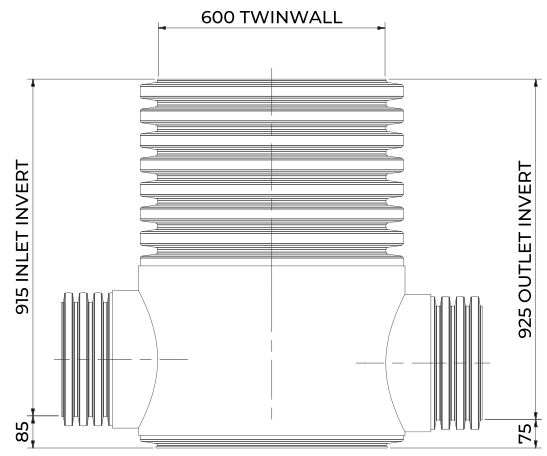

RHINO SERSIC
The RHINO SERSIC series are prefabricated, factory-built surface water benched channelled inspection chambers, engineered for efficient stormwater and drainage management. Each chamber has a main channelled base with optional side connections and integrates with the wider RHINO adaptor range.
Made from High-Density Polyethylene (HDPE) using extrusion and thermoforming, every chamber arrives fully assembled and ready to install, for light-duty through to full-traffic loading applications.
- BS EN 13598-2 (2009)
- Sewers for Adoption 7th Edition (SfA7)
- Design and Construction Guidance (DCG), including Parts B and C
- Building Regulations Part H1
- Adoptable and non-adoptable applications
Sloped benching guides water and sediment into the central flow channel rather than letting it settle in corners. The channel follows the profile of the connected pipes, so flow passes through with minimal turbulence and a lower risk of blockage.
Sizes in mm. Maximum inlet pipe size depends on chamber diameter - see page 3.
- Body: 600 mm twinwall
- Overall height: 1000 mm
- Top to inlet invert: 915 mm
- Top to outlet invert: 925 mm
- Inlet invert above base: 85 mm
- Outlet invert above base: 75 mm
Six diameters from 450 to 1200 mm, each with a moulded benched base. Standard overall heights run from 1000 to 3000 mm in 500 mm steps, with inlet positions and pipe sizes configured per project. Adoptable installations up to 3000 mm to pipe soffit; non-adoptable up to 6000 mm.
The installation design should consider traffic loadings, ground conditions and variable ground water levels. If in any doubt consult your scheme's designer or engineer. A suitably qualified professional is required to sign off the installation.

- One-piece HDPE unit, delivered fully assembled
- Up to 70% faster to install than sectioned chambers
- Up to five inlets at 3, 5, 6, 7 and 9 o'clock
- Outlet fixed at 12 o'clock
- Anti-fracture thermoformed base
- Resistant to hydrogen sulphide and corrosive acids and bases
- Light-duty to full-traffic loading
- Compatible with the full RHINO adaptor range